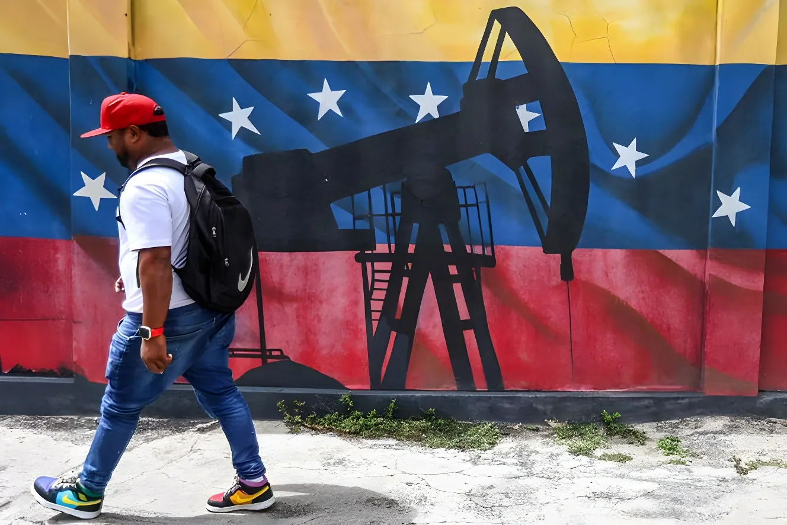

Neuf mois après la capture spectaculaire de Nicolás Maduro par l'armée américaine, Washington et Caracas ont annoncé fin août 2026 un accord pétrolier qualifié d'« historique » par Donald Trump, donnant aux États-Unis le contrôle majoritaire de plus de 65 milliards de barils de réserves vénézuéliennes. Présenté comme une relance salvatrice pour une industrie exsangue, le texte suscite autant d'espoirs de reprise économique que de doutes sur la souveraineté réelle laissée à Caracas.
Pour comprendre cet accord, il faut remonter à la nuit du 2 au 3 janvier 2026. Sur ordre de Donald Trump, l'armée américaine mène une opération militaire baptisée « Absolute Resolve » — volet final d'une campagne de pression navale déployée depuis août 2025 sous le nom « Lance du Sud », qui avait progressivement mobilisé près de 20 % de l'US Navy. Les forces spéciales américaines frappent plusieurs sites au nord du pays, dont Caracas, puis capturent Nicolás Maduro et son épouse Cilia Flores, aussitôt transférés à New York pour y être jugés pour narcoterrorisme.
La Cour suprême vénézuélienne charge alors la vice-présidente Delcy Rodriguez d'assurer l'intérim, avec le soutien de l'armée. Donald Trump annonce que Washington va « diriger » la transition et prévient Mme Rodriguez qu'elle subira le même sort que Maduro si elle ne fait pas « ce qu'il faut ». C'est dans ce rapport de force très asymétrique que s'engagent, mois après mois, les négociations qui aboutiront à l'accord pétrolier d'août 2026.
Le 28 août 2026, Donald Trump annonce sur son réseau Truth Social ce qu'il présente comme « le plus grand accord pétrolier de l'histoire mondiale », qui donnerait aux États-Unis le contrôle majoritaire de plus de 65 milliards de barils des réserves vénézuéliennes — de quoi, selon lui, plus que doubler les réserves américaines et faire durablement baisser le prix de l'essence, sans coût pour le contribuable.
Dès le lendemain, Caracas confirme la signature. Selon Delcy Rodriguez, l'accord prévoit le développement de 17 champs stratégiques, pour un investissement privé supérieur à 100 milliards de dollars et plus de 209 milliards de dollars de recettes fiscales attendues pour l'État vénézuélien. Le secrétaire d'État américain Marco Rubio confirme de son côté près de 100 milliards de dollars d'investissements privés, présentés comme un soutien à l'emploi et à la reconstruction économique du pays.
Capture de Nicolás Maduro lors de l'opération « Absolute Resolve ». Delcy Rodriguez assure l'intérim avec le soutien de l'armée et de la Cour suprême.
Le secrétaire américain à l'Énergie Chris Wright se rend sur le site de la coentreprise Chevron-PDVSA Petropiar, signe du maintien opérationnel des compagnies américaines.
Rodriguez promulgue des réformes ouvrant le pétrole et les mines au capital privé, y compris étranger. Washington assouplit en parallèle les sanctions pétrolières héritées de l'ère Maduro.
La production pétrolière progresse de 29,8 % depuis janvier, atteignant environ 1,2 million de barils par jour — loin toutefois des 3 millions extraits à la fin du siècle dernier.
Donald Trump annonce sur Truth Social la conclusion de l'accord pétrolier « historique » avec le Venezuela.
Caracas confirme la signature. Delcy Rodriguez défend l'accord dans un discours télévisé et insiste sur le maintien de la souveraineté vénézuélienne.
Le manque de détails publics sur le texte de l'accord a immédiatement nourri rumeurs et spéculations quant à des clauses potentiellement très favorables à Washington. Face à ces doutes, Delcy Rodriguez a tenu, dans un discours télévisé, à clarifier les choses : « une chose doit être absolument claire », a-t-elle affirmé, insistant sur le fait que le Venezuela demeure propriétaire de ses ressources. Elle présente l'accord comme un choix de la diplomatie plutôt que de l'affrontement, apportant capital, technologie et capacité opérationnelle à une industrie exsangue.
| Indicateur | Avant l'accord (déc. 2025) | Après l'annonce (août 2026) |
|---|---|---|
| Production pétrolière | ~925 000 b/j | ~1,2 M b/j (juil. 2026) |
| Sanctions pétrolières US | Renforcées (ère Maduro) | Largement assouplies |
| Accès au capital privé | Monopole d'État (PDVSA) | Ouvert au privé étranger |
| Réserves prouvées | ~303 Mds de barils | 65 Mds sous contrôle US revendiqué |
Chevron demeure la seule grande compagnie pétrolière américaine à avoir maintenu une présence continue au Venezuela, via ses coentreprises historiques avec PDVSA, y compris pendant les années de sanctions les plus strictes. Delcy Rodriguez a par ailleurs évoqué des discussions en cours avec Eni, Shell et BP, tandis que des contrats seraient sur le point d'être signés avec le groupe américain de services pétroliers SLB et la société texane Hunt Oil.
En interne, l'accord ne fait cependant pas l'unanimité : des cadres chavistes de la ligne dure ont mis en cause sa légalité et accusé le gouvernement de brader la souveraineté nationale, alors même que l'Assemblée nationale venait d'approuver une réforme, soutenue par Washington, du mode de désignation des juges de la Cour suprême. La popularité de Delcy Rodriguez s'est par ailleurs affaiblie après les critiques sur la gestion gouvernementale des séismes meurtriers de juin 2026.
« Cette transaction historique fera considérablement baisser le prix de l'essence. »
— Donald Trump, Truth Social, 28 août 2026« Le Venezuela conserve la propriété et la souveraineté sur ses ressources. »
— Delcy Rodriguez, discours télévisé, 30 août 2026La chute de Maduro et la mainmise américaine sur le secteur pétrolier rebattent les alliances construites en deux décennies de bolivarisme. La Chine, l'un des partenaires les plus proches du régime déchu, voit son influence reculer dans un pays où elle avait massivement investi ; la Russie, longtemps soutien militaire et diplomatique de Caracas, perd elle aussi un point d'appui stratégique dans l'hémisphère occidental. Pour certains analystes, ce précédent d'un changement de régime obtenu par la force pourrait inquiéter — ou inspirer — d'autres puissances observant la scène depuis l'extérieur.
Sur le plan intérieur, le politologue Benigno Alarcón relève un paradoxe : à mesure que les investissements américains augmentent, Washington pourrait développer un intérêt économique à la stabilité du gouvernement Rodriguez plutôt qu'à une transition politique rapide. Un scénario qui interroge la figure de María Corina Machado, prix Nobel de la paix 2025 pour son combat démocratique, elle-même partisane déclarée d'une privatisation de PDVSA et d'un Venezuela transformé en hub énergétique pour les États-Unis et le continent américain.
Cet accord marque un tournant, mais ne répond pas à la question qui agite le Venezuela depuis 2024 : la rente pétrolière, désormais canalisée par des capitaux américains plutôt que par l'État chaviste, profitera-t-elle réellement à une population dont près de 40 % vit sous le seuil de pauvreté et dont 7,7 millions de membres vivent en exil ? Ou s'agit-il simplement d'un nouveau visage de la dépendance, la question démocratique restant, elle, en suspens ? Les experts s'accordent sur un point : entre l'annonce et l'exploitation effective des gisements, plusieurs années s'écouleront — le véritable test de cet « accord historique » reste donc encore à venir.
Nueve meses después de la espectacular captura de Nicolás Maduro por el ejército estadounidense, Washington y Caracas anunciaron a finales de agosto de 2026 un acuerdo petrolero calificado de «histórico» por Donald Trump, que otorga a Estados Unidos el control mayoritario de más de 65.000 millones de barriles de reservas venezolanas. Presentado como una relanzamiento salvador para una industria exhausta, el texto suscita tantas esperanzas de reactivación económica como dudas sobre la soberanía real que conserva Caracas.
Para entender este acuerdo hay que remontarse a la noche del 2 al 3 de enero de 2026. Por orden de Donald Trump, el ejército estadounidense lleva a cabo una operación militar bautizada «Absolute Resolve» —fase final de una campaña de presión naval desplegada desde agosto de 2025 bajo el nombre «Lanza del Sur», que había movilizado progresivamente cerca del 20 % de la Marina estadounidense. Las fuerzas especiales atacan varios puntos del norte del país, incluida Caracas, y capturan a Nicolás Maduro y a su esposa Cilia Flores, trasladados de inmediato a Nueva York para ser juzgados por narcoterrorismo.
El Tribunal Supremo venezolano encarga entonces a la vicepresidenta Delcy Rodríguez asumir la interinidad, con el respaldo del ejército. Donald Trump anuncia que Washington va a «dirigir» la transición y advierte a Rodríguez de que correrá la misma suerte que Maduro si no hace «lo que corresponde». En este marco de fuerzas muy asimétrico se desarrollan, mes tras mes, las negociaciones que desembocarán en el acuerdo petrolero de agosto de 2026.
El 28 de agosto de 2026, Donald Trump anuncia en su red Truth Social lo que presenta como «el mayor acuerdo petrolero de la historia mundial», que otorgaría a Estados Unidos el control mayoritario de más de 65.000 millones de barriles de las reservas venezolanas —suficiente, según él, para más que duplicar las reservas estadounidenses y hacer bajar de forma duradera el precio de la gasolina, sin coste para el contribuyente.
Al día siguiente, Caracas confirma la firma. Según Delcy Rodríguez, el acuerdo prevé el desarrollo de 17 campos estratégicos, con una inversión privada superior a los 100.000 millones de dólares y más de 209.000 millones de dólares de ingresos fiscales previstos para el Estado venezolano. El secretario de Estado estadounidense Marco Rubio confirma, por su parte, cerca de 100.000 millones de dólares de inversión privada, presentados como un apoyo al empleo y a la reconstrucción económica del país.
Captura de Nicolás Maduro en la operación «Absolute Resolve». Delcy Rodríguez asume la interinidad con el apoyo del ejército y del Tribunal Supremo.
El secretario de Energía estadounidense Chris Wright visita la planta de la empresa conjunta Chevron-PDVSA Petropiar, señal de la continuidad operativa de las compañías estadounidenses.
Rodríguez promulga reformas que abren el petróleo y la minería al capital privado, incluido el extranjero. Washington flexibiliza en paralelo las sanciones petroleras heredadas de la era Maduro.
La producción petrolera aumenta un 29,8 % desde enero, alcanzando cerca de 1,2 millones de barriles diarios — todavía lejos de los 3 millones extraídos a finales del siglo pasado.
Donald Trump anuncia en Truth Social la conclusión del acuerdo petrolero «histórico» con Venezuela.
Caracas confirma la firma. Delcy Rodríguez defiende el acuerdo en un discurso televisado e insiste en el mantenimiento de la soberanía venezolana.
La falta de detalles públicos sobre el texto del acuerdo alimentó de inmediato rumores y especulaciones sobre cláusulas potencialmente muy favorables a Washington. Ante estas dudas, Delcy Rodríguez quiso aclarar las cosas en un discurso televisado: «una cosa debe quedar absolutamente clara», afirmó, insistiendo en que Venezuela sigue siendo propietaria de sus recursos. Presenta el acuerdo como una opción por la diplomacia en lugar del enfrentamiento, que aporta capital, tecnología y capacidad operativa a una industria exhausta.
| Indicador | Antes del acuerdo (dic. 2025) | Después del anuncio (ago. 2026) |
|---|---|---|
| Producción petrolera | ~925.000 b/d | ~1,2 M b/d (jul. 2026) |
| Sanciones petroleras EE.UU. | Reforzadas (era Maduro) | Ampliamente flexibilizadas |
| Acceso al capital privado | Monopolio estatal (PDVSA) | Abierto al privado extranjero |
| Reservas probadas | ~303.000 M de barriles | 65.000 M bajo control EE.UU. reivindicado |
Chevron sigue siendo la única gran petrolera estadounidense que ha mantenido una presencia continua en Venezuela, a través de sus empresas conjuntas históricas con PDVSA, incluso durante los años de sanciones más estrictas. Delcy Rodríguez mencionó además conversaciones en curso con Eni, Shell y BP, mientras que estarían a punto de firmarse contratos con el grupo estadounidense de servicios petroleros SLB y la empresa tejana Hunt Oil.
A nivel interno, sin embargo, el acuerdo no genera unanimidad: cuadros chavistas de línea dura cuestionaron su legalidad y acusaron al gobierno de ceder la soberanía nacional, justo cuando la Asamblea Nacional acababa de aprobar una reforma, respaldada por Washington, del modo de designación de los jueces del Tribunal Supremo. La popularidad de Delcy Rodríguez se debilitó además tras las críticas a la gestión gubernamental de los sismos mortales de junio de 2026.
« Esta transacción histórica hará bajar considerablemente el precio de la gasolina. »
— Donald Trump, Truth Social, 28 de agosto de 2026« Venezuela conserva la propiedad y la soberanía sobre sus recursos. »
— Delcy Rodríguez, discurso televisado, 30 de agosto de 2026La caída de Maduro y el control estadounidense sobre el sector petrolero recomponen las alianzas construidas en dos décadas de bolivarianismo. China, uno de los socios más cercanos del régimen derrocado, ve retroceder su influencia en un país donde había invertido masivamente; Rusia, durante mucho tiempo apoyo militar y diplomático de Caracas, pierde también un punto de apoyo estratégico en el hemisferio occidental. Para algunos analistas, este precedente de un cambio de régimen logrado por la fuerza podría inquietar —o inspirar— a otras potencias que observan la escena desde el exterior.
En el plano interno, el politólogo Benigno Alarcón señala una paradoja: a medida que aumentan las inversiones estadounidenses, Washington podría desarrollar un interés económico en la estabilidad del gobierno de Rodríguez más que en una transición política rápida. Un escenario que interpela a la figura de María Corina Machado, premio Nobel de la Paz 2025 por su lucha democrática, ella misma partidaria declarada de una privatización de PDVSA y de un Venezuela convertido en centro energético para Estados Unidos y el continente americano.
Este acuerdo marca un punto de inflexión, pero no responde a la pregunta que agita a Venezuela desde 2024: ¿beneficiará realmente la renta petrolera, ahora canalizada por capitales estadounidenses en lugar de por el Estado chavista, a una población de la que casi el 40 % vive bajo el umbral de pobreza y de la que 7,7 millones de personas viven en el exilio? ¿O se trata simplemente de un nuevo rostro de la dependencia, mientras la cuestión democrática sigue en suspenso? Los expertos coinciden en un punto: entre el anuncio y la explotación efectiva de los yacimientos pasarán varios años — la verdadera prueba de este «acuerdo histórico» está, por tanto, todavía por llegar.